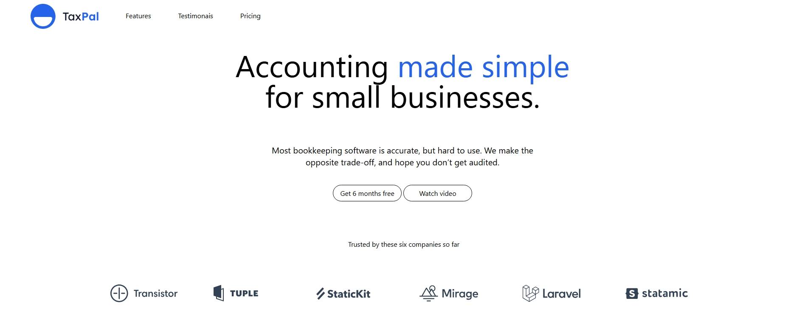

From Idea to Reality
In this project, I created a responsive theme using Tailwind CSS. The design is clean, modern, and highly customizable, making it adaptable to various screen sizes. I leveraged Tailwind's utility-first approach to efficiently style the components and ensure a smooth, user-friendly experience. This project highlights my proficiency in building visually appealing, responsive layouts with Tailwind CSS.
Visit the Tailwind UI Theme
